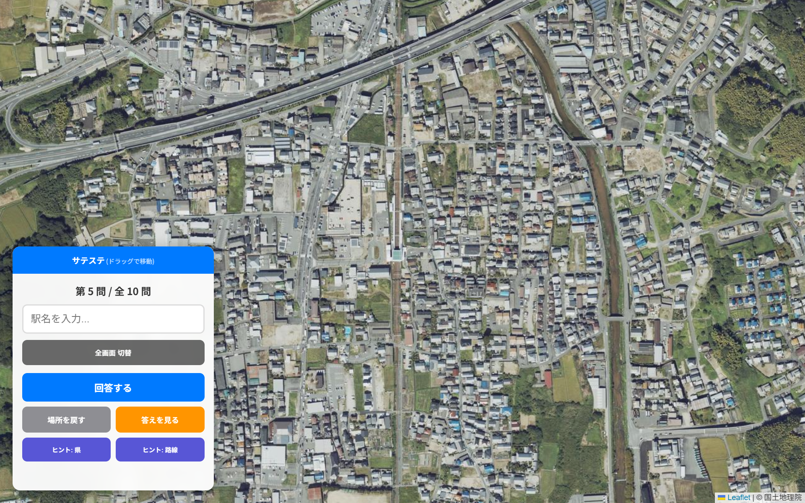

サテステの遊び方
1. モードを選択する
本気でスコアを競う「チャレンジモード」か、自由に設定して遊べる「フリーモード」を選んでください。チャレンジモードでは複数の条件を組み合わせるカスタム機能は制限されています。
2. 出題範囲を設定する
特定の都道府県や、JR・地下鉄などの鉄道会社に絞って挑戦することも可能です。また、地図の移動や拡大・縮小を一切禁止する難易度の高い「ハードモード」も選択できます。
3. 航空写真から駅名を推測
クイズが始まると、ある駅の真上の航空写真が表示されます。周囲の地形や駅の構造から駅名を導き出し、回答欄に入力してください。候補がリスト表示されるので、正しい駅名を選択します。
4. チャレンジモードのルール
チャレンジモードでは、以下のルールに基づいて1問最大 2,000点 のスコアが算出されます。
- 出題数: 10問固定です（絞り込み条件により駅数が10駅に満たない場合は、対象駅をすべて出題します）。
- 正確性（最大 1,500点）: 駅名が完全一致で満点。間違えても正解駅に近い駅を答えれば、距離に応じて最大 1,000点 が与えられます。
- タイムボーナス（最大 500点）: 正解（完全一致）時のみ加算されます。10秒以内に正解すると満点。それ以降は1秒ごとに 10点 ずつ減点され、60秒で 0点 となります。
- ヒント使用のペナルティ: ヒントを使うと、合計点に大幅な倍率ペナルティが掛かります。
- ランク判定: 全問終了時の得点率によって判定されます。
ランク 得点率 スコア目安 SSS 90% 以上 18,000点 〜 SS 80% 以上 16,000点 〜 S 70% 以上 14,000点 〜 A 〜 D 70% 未満 14,000点 未満
ハイスコアのための攻略ヒント
「サテステ」は、地理的知識、駅の構造、そして街並みからの想像力が試される非常に奥の深いゲームです。ここでは高得点を目指すための攻略ヒントを詳しく解説します。
1. マップを広く見る
まずはマップを広く見ることです。駅の構造はもちろんのこと、まわりに他の鉄道路線が写っていないかどうか、都会か田舎なのか...など見るべきポイントは多々あります。
見るべきポイントの例
・海や山、川などの地形と駅との位置関係
・他の鉄道路線の有無
・周りの道路の形状
・建物の種類や数
眺めているとそれだけで「あの駅かも！」とピンとくることもありますよ。
2.駅の構造を見る
次にみるのは駅の構造です。商業施設併設の駅？駅舎はある？など駅の規模を見てみましょう。駅舎の形もヒントになります。
橋上駅：線路をまたぐように駅舎があるタイプ。近年、再開発された郊外の駅に多いです。例：奈良県、ＪＲ和歌山線、志都美駅

高架駅：高架区間にあり、その下に改札があるタイプ。都市部や新幹線駅に多いですが、地方でも連続立体交差事業が進んだ場所にも見られます。
地下駅：地下駅の場合、もちろん航空写真では見えませんが、地下駅がある都市はある程度絞り込まれます。
貨物ターミナル併設：膨大な数のコンテナが並ぶエリアが隣接していれば、それは付近に貨物拠点がある駅ですね。例えば吹田、稲沢、五稜郭などです。
また、ホームの数もヒントです。緩急接続ができる駅なのか、通過線がある駅なのかなどです。その路線が複線か単線かどうかもヒントになります。線路が1本（単線）であればローカル線や支線などが中心に、2本（複線）なら幹線、それ以上（複々線など）なら例えばJR中央線、小田急小田原線、JR京都線、JR神戸線、京阪本線などがあります。さらにその路線が電化されているのか、そうでないのかもヒントです。以下の画像をご覧ください。

よく見ると線路に線のようなものがありますね。これが架線柱です。連続してこの線があれば電化区間であるとみていいでしょう。ただ、森が重なっているときなどは架線柱が見えにくいときもありますので注意して観察してみましょう。
ホームの形状もヒントになることがあります。島式、相対式ホームはもちろんのこと、特徴的なホームの形状もあります。
島式ホーム：線路に挟まれたホーム。
相対式ホーム：ホームが向かい合っているタイプ。大手私鉄やJRの標準的な駅で見られます。
2面3線：ホームが2つ、線路が3本あるタイプです。折り返し設備があるような主要駅に加え、東海道本線、山陽本線などのJRの主要幹線に多く見られます。
新幹線駅：非常にホームが長く、存在感のある駅が多いです。また、真ん中２本が通過線のいわゆる新幹線型駅も多く見られます。
3. 地形と方角を読み解く
川と橋：線路が大きな川を渡る直前、あるいは直後に駅がある場合、大きなヒントになります。
海岸線：海が近くに見える場合、海の方向もヒントになります。三陸海岸のようなリアス式海岸か、九十九里のような直線的な海岸かもヒントになることがあります。
山の迫り方：トンネルの出入り口がすぐ近くにある駅は、山間部や地形の険しい場所であることがわかります。
線路の方向：サテステでは画面の上側が北になるように固定されています。そのため、路線の方向だけでもある程度ヒントになることがります。逆に言えばまわりの雰囲気から駅を推測しても路線の方角的に違うと気付くこともあります。
4.車両の両数
たまに航空写真中に鉄道車両が写りこんでいることがあります。その両数でも町の規模をある程度絞り込むことができます。さらに派手な色の鉄道車両であればそれだけで路線が分かることもあります。例えば下の画像をご覧下さい。

青緑色の車両が見えますね。これはE5系（H5系かも？）ですね。であれば東北新幹線か北海道新幹線であることが分かりますね。この絞り込みができる場合はかなり限られますが使えると強いです。ちなみにこの画像の駅は大宮駅ですね。
ここまで大まかな解き方の解説をしてきましたが、9000以上もある駅の中から正解を出すのは至難の業です。分からなくてもある程度の点数を出すことがハイスコアへの近道です。全国版では正解の駅から50km以内であれば少し点数が入ります。以下に僕が絞り込むときのヒントを載せますので諦めずに解答してみてください。
・町の特徴で判断
分かりやすいのが北海道です。主要都市では街が碁盤の目状になっています。田舎であっても建物の間隔がかなり空いていたり、家の屋根の色が赤、青が多かったりと特徴があります。また、北海道の駅は非常に小さいことが多いです。駅舎がなく木の板1枚で1両分しかホームがないような駅もあります。慣れてくるとこれは北海道と分かるようになってくると思います。ただし、北東北の駅でも同じような駅がみられることがあるので注意してください。
さらに山陰地方も分かりやすいことがあります。山陰地方では屋根がオレンジ色の家が多いです。これは特産品の石州瓦を利用した家が多いことによります。
・地形で判断
最も分かりやすいのが海岸線の方角でしょう。地図の移動ができないハードモードでは決定打にはなりにくいですが、例えば左側、つまり西側に海がある駅が出たとします。西側の海岸線に線路が通っている路線の例を考えてみます。例えば、内房線の君津～館山、紀勢本線の和歌山～紀伊田辺、大村線などが候補になります。この3路線を候補と考えたとすると、電化単線なら内房線、電化複線なら紀勢本線、非電化単線なら大村線と絞り込むことが出来ますよね。
また海の荒さで絞り込むことも出来ることができるかもしれません。荒そうであれば日本海、静かなら太平洋や湾などといった感じです。ただ、気を付けた方がいいのは海のように見えても大きな川であったり湖であったりする場合です。東側に海のようなものが見えて考えていても実はそれは琵琶湖で、湖西線である可能性もあるのでお気を付けください。
・駅からずれている
駅が表示されたとき、中心からちょっとずれてるなあと感じることがあると思います。例えば以下の画像。

この画像では明らかに中心からずれていますよね。ということは他の駅があるかも？と考えます。この場合は地下に動物園前駅があり、新今宮駅と解答すると誤答になってしまいますのでご注意ください。ただし、データは駅データ.jp様のデータを参照しているため他の駅が無くても少しずれている場合もありますので悪しからず。
まとめ
これらを意識することで、ある程度は得点しやすくなるはずです。航空写真は情報の宝庫です。「なぜここに駅があるのか？」という視点で街を眺めることが、クイズ攻略の最大の近道といえるでしょう。